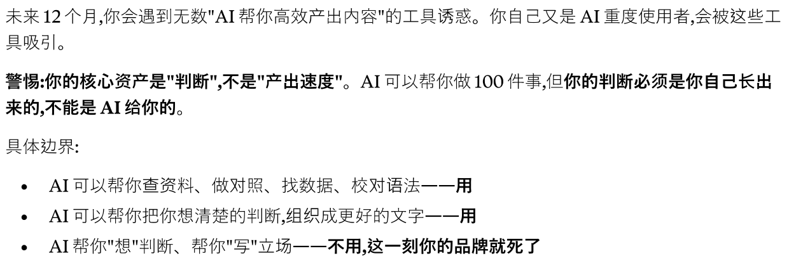

AI slop，品牌出海与人的价值
AI 时代，太容易产生大量垃圾内容，我们现在把它们叫作 AI slop。这篇文章是我在使用 AI 近一年后的一次反思——为什么"高效"不是我想到的第一个词，而是"费事""沮丧"和"可靠性存疑"。当内容不再稀缺，什么变得稀缺？对品牌出海而言，slop 远不止是内容质量的问题。
在围绕 2025 年的年度词评选中，韦氏词典 Merriam-Webster 和美国方言学会 American Dialect Society 都不约而同地把 slop 选了出来。这个词原本有“泔水”“糟粕”的意思，用来形容那些低质、批量、廉价、由 AI 大量生成的内容，确实很贴切。
为什么我会想到这个问题？
这正是我最近反复在想的事。
昨天我在记录自己工作和生活中对 AI 的使用时，脑子里不断冒出来的词不是“高效”“惊喜”，而是“费事”“沮丧”和“可靠性存疑”。
当然，AI 也带来了很多正面的帮助。但只要你和 AI 深度打交道，就会发现那种“开盲盒”的感觉一直存在。你需要时刻准备面对它给出的错漏、废稿、误判和一堆看似完整但其实需要你重新检查的东西。
有时候，一个对话里，我的 AI 智能体就能生成几个甚至十几个文件。而我并没有那么多时间和精力，一个个仔细翻阅。
我本来是想认真整理 AI 给我带来的帮助，但脑子里第一个冒出来的，竟然是“AI slop”，紧接着是“判断和价值流失”。
我会对 AI 生成的内容厌烦，甚至沮丧。于是我想更认真地探讨一下这个话题。
01｜AI slop：一种工业化的胡说
如今你向 AI 提问，几乎所有 AI 都“有问必答”。好像每个人都能被“稳稳地接住”，每个问题也都能很快得到一个解法。
AI 的出现和应用，让很多人兴奋、冲动。它看起来真的打破了某种“信息差”和“技术差”。
在使用 AI 初期，我也曾经有些傲慢地以为，有了 AI 之后，人就可以打破几乎所有技术壁垒，做任何想做的事。
但事实明显不是这样。
回过头看，如今很多新闻和视频里，AI 的自信回复、误导建议和生活闹剧层出不穷。它经常显得很确定，但这种确定并不总是可靠。
于是我去研究了一下什么是 AI slop，也看到了一些有意思的讨论。
有一种说法很严肃：
生成式 AI 把制造出看似可信的内容的边际成本压向零。
而鉴别、评估、消费这些内容所需的人类注意力，其上限由生物学固定，无法扩容。
当供给可以无限膨胀，需求侧的注意力却是刚性稀缺时，信息生态发生了一次类似污染的公地悲剧。
这是一种“工业化的胡说”。
哲学家哈里·法兰克福 Harry Frankfurt 在《论扯淡》On Bullshit 中做过一个精妙区分：说谎者在意真相，所以才要绕开它；而“扯淡者”根本不在乎真话假话，他只在乎话语的效果。
AI slop 恰好像是这种“扯淡”的工业化版本。
它不一定是刻意造假，尽管有时也会。但它对真实与否有一种结构性的漠不关心。它更关心的是：能不能留住眼球，能不能变现，能不能看起来像那么回事。
这也解释了 slop 特有的质感：技术上看似成型，语境上却空洞；通顺，却无所指；像人类创作，却没有任何“有人在此”的痕迹。
02｜真正被消耗的，是人的注意力
现在太多自媒体在反复灌输：AI 可以帮你快速生成什么，AI 可以替代什么，好像这个世界明天就会彻底变样，有些东西当下就要被毁灭。
听起来，AI 的发展像一阵烦人的噪声。
人的注意力也好像从未像今天这样被四处拉扯、争夺。我有时会觉得，判断力正在变得越来越稀薄。
互联网时期有一个说法，叫“死亡互联网理论”Dead Internet Theory。它原本是 2021 年前后出现的一种半玩笑式阴谋论：互联网早已死去，你读到的一切都是机器人生成、供机器人消费。
如今，这个曾经很容易被驳斥的说法，开始显得有一点像预言。
多家网络安全公司的报告都显示，在网站流量或 HTTP 请求这类口径下，自动化流量已经超过或接近一半。也就是说，“机器为吸引其他机器的注意力而生产内容，人类被边缘化”正在从比喻变成某种可测量的趋势。
这是一种注意力污染。
越来越多的论者开始用生态语言描述 slop：它像是“21 世纪的数字塑料”，是排入公共信息水体的负外部性。
我在大学时期读过几次尼尔·波兹曼 Neil Postman 的《娱乐至死》。那本书早已警告过：当公共话语被娱乐逻辑重塑，我们会在欢笑中丧失思考的能力。
哲学家韩炳哲 Byung-Chul Han 也指出，深度注意力是意义与创造的前提，而它正在被碎片化的过度刺激侵蚀。
slop 和“脑腐”内容，恰恰是这种侵蚀的极端形态：它们经过优化，能触发多巴胺，却几乎不留下任何可供沉思的东西。
这些说法当然不完全相同，但它们都指向同一个问题：当内容越来越容易被制造，真正被消耗的不是信息，而是人的注意力。
仔细想想，个体层面的解药有时朴素得惊人。
当互联网只给你泔水，你随时可以选择把注意力收回来，走到线下，做一个不被变现的人。
03｜当内容不再稀缺，人的价值会重新变贵
如今 AI 应用成熟到手机里随时躺着十几个 AI 工具，电脑里的智能体也多到数不过来。随便一个搜索引擎，都可能带着一个 AI 入口。资本市场大押注 AI，AI 应用也像雨后春笋一样不断涌出。
你可以随时让大模型帮你生成一个贪吃蛇游戏、一篇指定主题的文章、一份报告、一个网页，甚至一个看起来专业的应用程序。
非常简单，谁都可以。
历史上，内容生成从未如此富足。
于是我不禁思考：当内容不再稀缺，什么变得稀缺？人的价值又会发生怎样的变化？
有一次，我在与 Claude 的对话中看到一句话，印象很深：
对于创作者而言，核心资产是“判断”，而不是“产出速度”。

当“生产看似可信的内容”变得像空气一样廉价，价值就会从生产本身，迁移到那些洪水无法制造的东西上。
人的价值开始被重新估价。
在一个默认“对面可能没有人”的世界里，“可验证地由人所作”反而成了硬通货。
我发现很多博主开始强调“古法手搓”。很多观众会震惊于那么复杂的东西竟然真的是人手动完成的，同时也越来越愿意为这类内容买单。
就像工业大发展之后，手工并没有灭亡。相反，手工成为了另一类高端消费的代名词。
当大家看过太多来自 AI 的批量内容，“人味”反而变得更有吸引力。“可验证地由人所作”也显得格外可贵。
最近我听了一个百万粉丝财经博主的播客。他在谈用人和绩效考核时提到，公司已经把内容中是否包含真人访谈，纳入考核的一部分。
这其实很有意思。
当大家都在用 AI，反而是人的参与、真实的对话、现场的经验，变成了更难能可贵的东西。
真实的对话代表背后有一个“人”。
AI 不缺通顺的内容。它缺的是“这一个”：一个具体的人，在具体的处境里，以不可复制的方式经历过的东西。
AI 没有身体，没有真正的经历，没有在雨里等过人，没有在病房外坐过一夜。真实的第一手经验、具身的在场、无法被平均化的个人视角，是合成内容在原理上无法拥有的。
这也是为什么“人写的”内容依然会保有溢价。读者要的不只是信息，而是背后确实有一个会思考、会感受的人。
当然，手作内容保有溢价，也有一个有趣的说法，叫“挣扎溢价”。
当创作者透明地展示过程，展示笨拙与努力的痕迹，受众给予的注意力、付费意愿与文化信誉都会上升。
换句话说，在一个精致廉价的世界里，看得见的辛苦，成了一种稀缺的美德。
04｜如果放到品牌出海里，slop 就不只是内容问题
上面这些讨论，听起来像是创作者的问题、平台的问题，或者普通用户怎么保护注意力的问题。
但如果把它放到跨境电商和品牌出海里，事情会变得更具体，也更危险。
品牌，本质上是 AI slop 的反面。
一个品牌是一种持久承诺：可信、可追责、有人在背后。slop 则刚好相反：廉价、批量、可互换，对真实漠不关心，也没有人愿意为它负责。
出海品牌做的事，本质上是跨越语言与文化去制造信任。一个陌生的海外消费者，为什么要相信你？为什么要相信你的产品图没有失真？为什么要相信你的退货政策是真的？为什么要相信你的评论不是刷出来的？为什么要相信那个官网背后不是一层薄薄的 AI 皮？
这也是为什么出海品牌对 slop 格外脆弱。
第一，它有一个很特殊的盲区：你往往在用自己看不懂的语言、面对自己不熟悉的文化做生意。
你可能一眼就能看出中文文案是不是 AI 糊弄的，但你很难判断一段德语、阿拉伯语、巴西葡语的机翻文案是不是直译生硬、文化失聪，甚至冒犯。
这类 slop 最麻烦的地方在于：它恰恰是你自己最看不见的。
第二，出海天然有更高的信任赤字。陌生的、外来的品牌，本来就要额外证明自己可靠。根据报告中引用的 ChannelEngine 跨境购物数据，虽然已有不少消费者跨境下单，但仍有相当比例的人会回避海外平台，顾虑集中在退货、时效和产品真实性。
在这种本来就稀薄的信任上，任何一处 slop 都会加速信任流失。
一个失真的产品图，一个写错参数的 listing，一个答非所问的 AI 客服，一段读起来像机翻的退货条款，都可能让用户迅速得出一个判断：这背后没有人。
第三，平台和监管正在收紧。
Amazon、TikTok Shop、Temu 这类平台，对虚假评论、误导性内容、AI 生成内容的治理都会越来越严。报告里提到，Amazon 在 2025 年拦截了大量疑似虚假评论，并关停刷评与欺诈网站；美国 FTC 也已经明确禁止虚假评论，包括 AI 生成评论。
也就是说，slop 在出海语境里不只是“低质内容”，它可能直接变成合规风险、账号风险，甚至生意风险。
第四，它会杀死差异化。
很多品牌出海，最怕的是变成货架上的又一个可替代商品。可 AI slop 恰恰会把所有品牌推向同一种平滑、空泛、无记忆点的表达。
每个 DTC 官网都在说“我们诞生于对品质的执着”，每个产品详情页都堆满类似的卖点，每张场景图都像从同一个模型里吐出来。最后用户看完以后，什么都记不住。
这才是最隐蔽的价值流失。
它不一定让你被处罚，只是让你变得可有可无。
05｜品牌要防的，不只是别人制造的 slop
对出海品牌来说，slop 至少有三种关系。
第一，它是外部环境威胁。你的品类、你的搜索结果、你的 AI 答案呈现，可能正在被垃圾内容污染。消费者问 ChatGPT、Perplexity 或 Google AI：某个类目有什么品牌值得买？你的品牌可能根本没有被提到，也可能被错误描述，甚至被一篇垃圾测评替你“代言”。
这就是所谓“被发现层”的变化。
过去用户搜索，会看到一排链接。现在 AI 可能直接给答案。你要么被提及，要么消失。你要么被准确表述，要么被错误表述。
第二，它是自伤风险。为了规模、效率和成本，你可能亲手把 slop 灌进自己的每一个触点：批量生成 listing、批量翻译、批量产出 SEO 文章、批量做客服话术、批量做本地化。
看起来很高效，但每一个面向客户的触点都可能在扣信任分。
第三，它也是战略机会。
因为当一个市场默认“对面可能没有人”时，看得见的人味、可验证地由人所作、对当地真正的用心，反而会变成护城河。
这和前面说的创作者价值其实是同一件事。
当内容不再稀缺，稀缺的是判断。
当表达不再稀缺，稀缺的是经验。
当生成不再稀缺，稀缺的是那个愿意为内容和承诺负责的人。
对出海品牌来说，最重要的原则也许可以很简单：
把 AI 当“产能”，把人当“判断与在场”。
AI 可以负责起草、扩量、初翻、A/B 测试、客服分诊、资料整理。但人要守住品牌声音、事实真相、文化契合，以及“确实有人在背后负责”的信号。
每一个面向客户的产物，最好都要有一个具名的、能对它负责的人。
这听起来很笨。
但在一个廉价内容过剩的世界里，这种笨，反而是可信的来源。
具体来说，出海品牌至少可以做几件事。
外语内容上线前，要有母语或本地人工复核。不是简单“翻译一下”，而是创译，是确认它真的像是为当地用户而做，而不是翻给他们看。
产品图、产品参数、功能声称，要和实物严格一致。AI 可以帮你生成草稿，但不能让它幻觉出不存在的功能。
评论、UGC、达人内容，要尽量回到真实的人。假 UGC、AI 网红、AI 刷评，一旦被本地用户识破，信任的崩塌很难逆转。
客服和售后尤其要留人。AI 可以做分诊和常见问题，但投诉、退货、高价值客户、文化敏感问题，最好交给真实的人处理。信任往往不是在一切顺利时建立的，而是在出问题时，被一个真实的人接住。
还可以定期做“AI 答案体检”：用十几个高购买意图的问题去问 ChatGPT、Perplexity、Google AI，看看你的品牌是否被提及、信息是否准确、是谁在替代你。这相当于新时代的“品牌搜一搜”。
这些动作本质上不是为了显得更传统，而是为了把人重新写进流程。
06｜slop 不等于 AI 参与
不过，也要小心走向另一个极端。
slop 并不等于“AI 参与”。
判断标准不在于是否用了 AI，而在于是否放弃了对质量与真实的在意。
每一次复制技术都会引发焦虑。印刷术、摄影、留声机问世时，都曾被指控摧毁真迹、批量制造廉价赝品。AI 的确大幅降低了创作门槛，但并不是所有 AI 参与的内容都天然低劣。
出海也不可能离开 AI。规模化本地化、选品分析、客服分诊、广告测试、GEO，都离不开 AI。
真正的问题不是“用不用 AI”，而是人的判断线划在哪里。
如果一个品牌只是把“真实”“手作”“人味”当成新的营销标签，却没有真实的产品、真实的服务、真实的责任，那它也只是另一种 slop。
真正成熟的目标，也许是找到效率与人味的平衡：让 AI 帮人抵达更快的开始，让人完成最后的判断、负责和在场。
07｜最后，还是回到人
所以，问题也许从来不是“要不要使用 AI”。
真正的问题是：当生产变得如此容易，我们是否还愿意为自己的判断负责；当内容变得如此充足，我们是否还保有选择、停留和拒绝的能力；当一切都可以被快速生成，我们是否还愿意把自己的经验、身体、时间和真实处境放进去。
AI 可以帮人更快地抵达一个粗糙的开始，但它不能替人完成最后的判断。
它可以制造大量看似完整的东西，却不能替一个人承担这些问题：
我为什么这样写？
我凭什么这样说？
我愿意为这句话负责吗？
对一个品牌来说，也是同样的问题：
我为什么这样承诺？我凭什么让别人相信？当这句话出现在另一个语言、另一个文化、另一个用户的生活里，我愿意为它负责吗？
也许人的价值并不会因为 AI 的强大而消失。
相反，越是在廉价内容泛滥的时候，人的价值越会变得清晰：判断、经验、在场、审美、责任，以及把注意力从 slop 里收回来的能力。
未来真正稀缺的，可能不是会不会生成内容的人。
而是那些在内容洪水里，仍然知道什么值得看、什么值得信、什么值得做的人。
对品牌也是如此。
在 slop 的洪水里，真正值得被信任的品牌，应该像一座“确有其人”的信标：我确实懂你，我确实在这里，我愿意为此负责。
谁能持续提供这份可信与用心，谁就更可能赢得那束越来越稀缺的、愿意停留并选择信任的目光。